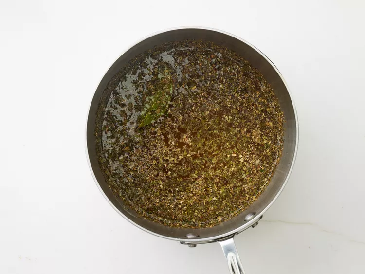

This Italian beef is perfect for sandwiches. It's easy to make in a slow cooker and tastes just like my all-time favorite sandwich that I used to get at a local restaurant when I lived in a suburb of Chicago.
Serve on crusty rolls with roasted sweet or hot peppers.
Combine water, salad dressing mix, oregano, basil, parsley, onion salt, garlic powder, bay leaf, salt, and black pepper in a saucepan. Stir well, and bring to a boil.
Place rump roast in a slow cooker; pour hot herb mixture over the meat.
Cover and cook on Low for 10 to 12 hours, or on High for 4 to 5 hours.
Remove bay leaf; shred beef with a fork and serve with some of the hot gravy.
Enjoy !